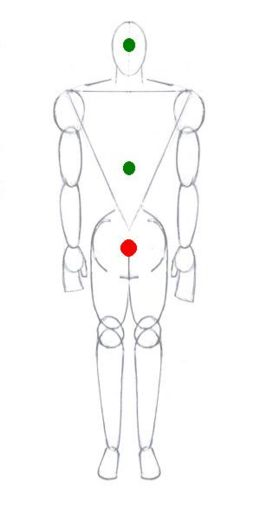
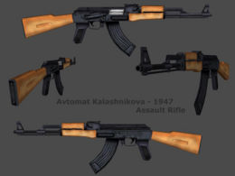

Reglas para pelear
 De: La Frikipedia, la enciclopedia extremadamente seria.
De: La Frikipedia, la enciclopedia extremadamente seria.
Lee con atención estas sencillas reglas antes de que le quieras partir la cara a alguien:
Reglas
 En caso de pelea procure asestar un golpe contundete en los puntos rojos...
si todo falla opcionalmente puede tratar de asestar golpes en los puntos verdes
Si eres más grande que tu oponente
- En caso de ser más grande que tu contrincante la regla primordial es tratar de lucirse dándole unos buenos golpes en el estomago y en la cara, pero con cuidado de no conmocionarlo
- Importante: Ten cuidado de que no te valla a pegar en la cara por que si no te puede ganar).
Si eres más pequeño que tu oponente
- Si eres más pequeño que tu nemesis: no trates de lusirte solo empieza a dar golpes como loco y trata de darle en la cara, o también da patadas como el pobre diablo que eres.
Si eres del mimso tamaño que tu oponente (el punto muerto)
- Si tu nemesis es de tu estatura: la pelea sera emocionante para los que están viendo, pero la verdad no se que decirte... no se, intenta dar golpes como loco o hacer alguna llave de las luchas.
Reglas básicas
- Nunca pero nunca le pidas perdón a tu contrincante.
- Nunca pelees con un chica
- Corolario 1: Y si lo haces solamente procura NO perder
- Corolario 2: Pero tampoco la golpeees (Menos en frente de alguien más) que se trata de una chica ¡Joder, que por algo dije nunca dos puntos arriba!
- Corolario 3: Excepción a la regla: En caso de seas chica entonces quedas excenta y si puedes pelear con una chica
- Corolario 3.1: De ser dado el caso (que seas una chica) entonces puedes pelear con un chico
- Corolario 3.1.1: Procura GANAR
- Corolario 3.1.2: Si te gana (o si tan siquiera se defiende) difama hasta el cansancio al chico en cuestión por haberte puesto un dedo encima
- ¿No te encanta lo redundante?
- Como la biblia misma: No existe contradicción alguna entre estas reglas y hasta son complementarias
Reglas post-pelea
Aun si los papeles estuvieran invertidos él todavía se vería mal
- Cuando ganes la pelea: trata de no alardear mucho de ello por que si no puede que tu nemesis quiera vengarse, pero en las conversaciones que tengas acerca de la pelea trata de decir: "No fue muy difícil...", "... Cuando me pegaba le estaba dando chanse...", "Nunca creí que fuera a ganarme...", "Fue más fácil de lo que pensé...", etc.
- Si perdiste en la pelea: solo di que estabas lastimado, pero que si hubiera otra oportunidad lo acabarías (Nota: trata de que esto no lo escuche tu nemesis, por que si no puede que te partan la cara más veces).
- Si vas perdiendo la pelea: si vas perdiendo y sientes que te van a mandar al hospital pide perdón como la niña que eres.
Recomendaciones
- ¡¡¡Patá en los cojones!!! (Imprescindible)
- Estudiar a fondo artes marciales (Querer saberlo todo en las 24 hrs. previas a la pelea... clásica técnica de los deseperados)
- La tierra circundante esta mejor en los ojos de tu contrincante que en el suelo
- Traer de 3 a 4 amigos (y amigos de los útiles, no frikis, que se trata de amedrentrar al oponente no de ofrecerle la oportunidad de dar un paliza colectiva)
- El Capoeira es un baile: No sirve en la vida real
- Presume tener una cinta negra (No especifiques de que tipo de cinta hablas o como la obtuviste, a veces funciona)
Reglas por tribus urbanas
Un
guerrero sabio es aquel que aprovecha y dispone de los recursos que la naturaleza brinda
Reglas Punk (No hay contradicción de términos)
- Golpea al nazi qe se te ponga en frente
Reglas Jebi
- Golpea al Pijo que se te ponga enfrente
- Golpea al Cani que se te ponga enfrente
- Golpea al Emo que se te ponga en frente
Si ententas defenderte así sólo harás el ridiculo
Reglas Nazis
- Golpea lo que se te ponga enfrente
Reglas Hippie
- Tómate tu medicina y dejate golpear por lo que se te ponga enfrente
Reglas Emo
- Consiguete un buen quiropráctico o ve recurriendo a la navaja
Reglas Cani
Véase el artículo principal: Cultura cani
 ¿Cinta negra? ¡Al carajo con eso!: Al momento de pelear estas son todas las credenciales que requieres (¡
Trata de detener una bala si puedes Bruce!)
En lo referente a peleas, la constitución promulgada por los canis estipula:

|
Ley número 1 (peleas)
- En una pelea el número de los nuestros siempre tiene que ser cuatro veces superior al de los contrincantes o víctimas, por ello nos organizaremos en manadas de ocho o más al patrullar las calles.
- Los sujetos para atacar estan ordenados por este nivel de preferencia: niños, viejos y estudiantes, absteneos de pelear con grupos de mas de dos adversarios.
- Cuando vayamos perdiendo una pelea jamas dejaremos a un compañero cani atrás, por eso deberemos huir marcha atras y dejarlo delante.
|

|
|
|
Reglas para chicas
Chicas: Lo principal es el espectáculo
¿Chicas?... ¡¿Chicas?! bueno la verdad no estaba preparado para esto y no traía material, pero ya que vas a pelear pues... no se, me imagino que puedes utilizar los conocimientos de las clases de defensa personal o de artes marciales, y si no has asistido a ninguna pues siempre puedes morder, patalear, manosear, gritar ocasionalmente, cerrar bien fuerte los ojos, jalar lo que encuentres y en general hacer todo eso que hacen las mujeres (¡realista!, que machista no soy); con suerte lograrás algo y ganaras o -considerando estos tipos de combates- cuando menos "ganaras". Ahora que si sí van a pelear hacedlo en serio y no olviden ofrecer un espectaculo decente (el lodo, el aceite y los bikinis son buenas herramientas).
Consideraciones finales
- NOTA: Tomando en cuenta lo que tú y yo somos cabe
recordar mencionar que Nunca he visto o estado en una pelea, así que tal vez lo mejor es que no le hagas caso a estas reglas (... claro excepto por la parte del lodo, el aciete y los bikinis).
Véase también
Enlaces externos
Autor(es):
- Nexo
- Frikiman
- Roms
- Azulejos
- El Sevillano
- RUIz
- Cibercrank
- Thralled
Frikipedia 2005-2016, Licencia
GFDL 1.2 - Extraído por FrikiLeaks